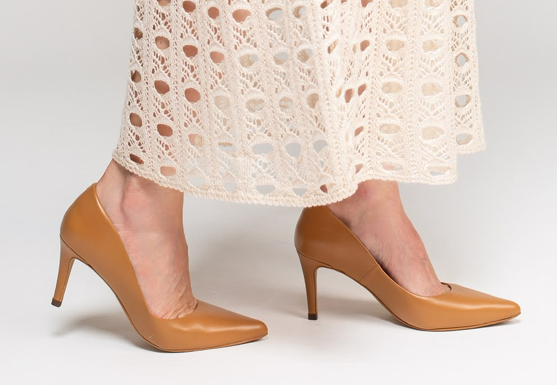

👠
Conforto
Calçados pensados para proporcionar conforto durante todo o dia.
Descubra nossa nova coleção de calçados com conforto, elegância e estilo para todos os momentos.

Conforto, estilo e qualidade para todos os momentos.
Calçados pensados para proporcionar conforto durante todo o dia.
Design moderno e elegante para combinar com todos os seus momentos.
Materiais selecionados e acabamento pensado para oferecer qualidade.
Confira as principais dúvidas sobre nossos calçados.
Trabalhamos com tamanhos do 34 ao 39. Consulte a disponibilidade do modelo desejado.
Nossos calçados são produzidos em material sintético, buscando unir estilo, praticidade e conforto.
Sim. Os modelos apresentados possuem solado antiderrapante.
Recomendamos conferir as medidas disponíveis para o modelo escolhido antes de finalizar a compra.